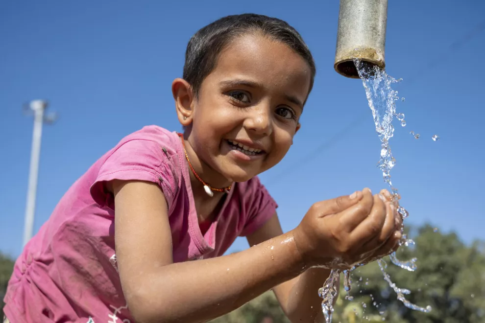
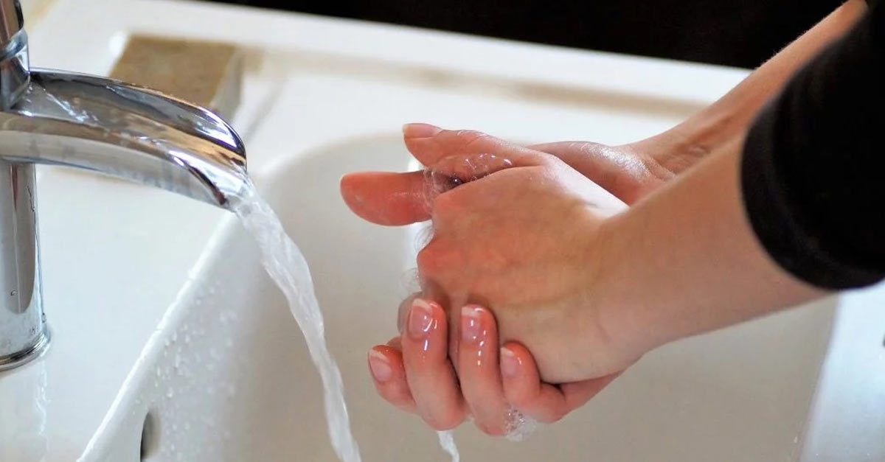
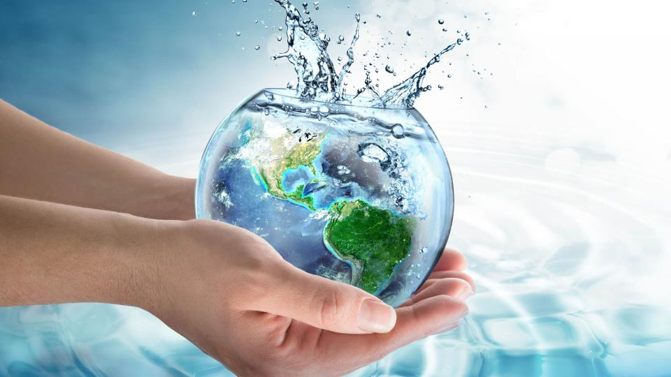

Without Water we cannot live.Water doing a male role in human life.In day today life we use water for doing many works.Water Covers about 70% of earth surface as well as 65% of human body.In chemically water water molecule is made up of 2 hydrogen atoms and 1 oxygen atom.It has many properties like High Specific heat, Density and Expansion and solvent Abilities.
Water is used in many fields such as Domestic Use,Industrial Use,Agricultural Use,Transpotation and Environmentally.Domestically we use water for Cooking, Drinking, cleaning and sanitation. In industrially we use water for Manufacturing and for many productions. In Agricultural field we use water for irrigating,Aqua organisms and providing drinking water for animals. Environmentally for habitat, and climatic regulartionIn transpotation water is using for shipping. Also in medical and many other fields we use water.
Sanitation means the maintaining of good health. To keep a good healthy we have to do many activities like proper disposal of human waste,waste management, desposing ,Recycling and many more. To maintain personal hygiene individuall should drink clean water should wash hands correctly,use safe food.It also reduces the spreading of diseases and it helps to keep environment clean. Sanitation makes the achieving of sustainable development Goals.So individually we have to maintain our health.
There are many challenged in using of water. Some of them are water pollution,water scarcity,Weeknesses in water management,Health impacts,weather conditions and akso agricultural impacts. With the population increases there is an scarcity of water. Climatic changes can also be occur. Due to pollution many diseasescn be spreaded. Due to floods, it affects aquatic organisms as well as it destroys human habitats.Because of water scarcity the crops will be die.There are many disadvantages as well as many advantages of water.
As the water is essential factor for human life, We have to use water carefully. Always We have to drink clean water to maintain a Good health. It plays major role in every field We have to protect water sources. By maintaining a Good water Quality we can have a sanitation. For existence of life we have to protect clean water as there is limited amount of clean water in the world. So everyone should protect the water to make this world more healthier and Beautifull.
